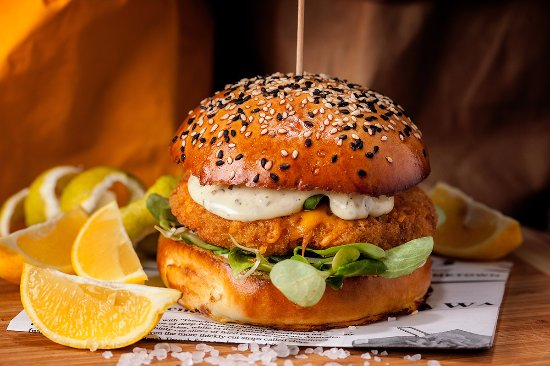

Masala Crispy Burgur

Ingredient
Marination:
- Chicken breast 4 (boneless)
- Mustard powder ½ tsp
- Oyster sauce 2 tbsp
- Black pepper 1 tsp (crushed)
- Salt 1 tsp
For batter:
- Flour 6 tbsp
- Corn flour 2 tbsp
- Baking soda 1tsp
- Egg 1
- Milk 6 tbsp
- Bread crumbs 1 cup
- For Assembling:
- Mayonnaise 6 tbsp
- Tomato 2
- Lettuce ½
- Buns 4
Cooking Directions
- Marinate the chicken breasts with oyster sauce, salt, black pepper and mustard.
- Let it marinate for 1/2 hour.
- In another bowl put batter ingredients except bread crumbs, mix thoroughly and make batter.
- Dip the chicken breasts in the prepared batter then coat by breadcrumbs and then deep fry until cooked.
- Take bun cut between and spread mayonnaise on the buns.
- Put a leaf of lettuce and fried chicken breast in bun and tomato close bun and serve.